引言
此文档是关于学习《深度学习入门：基于Python的理论与实现》所做的笔记，方便后续复习，温故而知新。
1. Python的相关基础
1.1. Python基础知识
1.2. Numpy
>>> x = np.array([1.0, 2.0, 3.0])
>>> print(x)
[ 1. 2. 3.]
>>> x = np.array([1.0, 2.0, 3.0])
>>> y = np.array([2.0, 4.0, 6.0])
>>> x + y # 对应元素的加法
array([ 3., 6., 9.])
>>> x - y
array([ -1., -2., -3.])
>>> x * y # element-wise product
array([ 2., 8., 18.])
>>> x / y
array([ 0.5, 0.5, 0.5])
>>> x = np.array([1.0, 2.0, 3.0])
>>> x / 2.0
array([ 0.5, 1. , 1.5])
>>> A = np.array([[1, 2], [3, 4]])
>>> print(A)
[[1 2]
[3 4]]
>>> A.shape
(2, 2) # 生成了一个 2 × 2 的矩阵 A
>>> A.dtype
dtype('int64')
>>> B = np.array([[3, 0],[0, 6]])
>>> A + B
array([[ 4, 2],
[ 3, 10]])
>>> A * B
array([[ 3, 0],
[ 0, 24]]
>> A * 10 # 广播
array([[ 10, 20],
[ 30, 40]])
>>> X = np.array([[51, 55], [14, 19], [0, 4]])
>>> print(X)
[[51 55]
[14 19]
[ 0 4]]
>>> X[0] # 第0行
array([51, 55])
>>> X[0][1] # (0,1)的元素
5
>>> X = X.flatten() # 将X转换为一维数组
>>> print(X)
[51 55 14 19 0 4]
>>> X[np.array([0, 2, 4])] # 获取索引为0、2、4的元素
array([51, 14, 0]
>>> X > 15
array([ True, True, False, True, False, False], dtype=bool)
>>> X[X>15]
array([51, 55, 19]1.3. Matplotlib
import numpy as np
import matplotlib.pyplot as plt
# 生成数据
x = np.arange(0, 6, 0.1) # 以0.1为单位，生成0到6的数据
y1 = np.sin(x)
y2 = np.cos(x)
# 绘制图形
plt.plot(x, y1, label="sin")
plt.plot(x, y2, linestyle = "--", label="cos") # 用虚线绘制
plt.xlabel("x") # x轴标签
plt.ylabel("y") # y轴标签
plt.title('sin & cos') # 标题
plt.legend()
plt.show()
# 显示图像
import matplotlib.pyplot as plt
from matplotlib.image import imread
img = imread('lena.png') # 读入图像（设定合适的路径！）
plt.imshow(img)
plt.show()2. 感知机
2.1. 感知机是什么？
感知机接收多个输入信号，输出一个信号。这里所说的“信号”可以想象成电流或河流那样具备“流动性”的东西。像电流流过导线，向前方输送电子一样，感知机的信号也会形成流，向前方输送信息。但是，和实际的电流不同的是，感知机的信号只有“流 / 不流”（1/0）两种取值。在本书中，0 对应“不传递信号”，1 对应“传递信号”。
图 2-1 是一个接收两个输入信号的感知机的例子。、 是输入信号，y 是输出信号，、 是权重（w 是 weight的首字母）。图中的○称为“神经元”或者“节点”。输入信号被送往神经元时，会被分别乘以固定的权重（w1x1、w2x2）。神经元会计算传送过来的信号的总和，只有当这个总和超过了某个界限值时，才会输出 1。这也称为“神经元被激活”。这里将这个界限值称为阈值，用符号 θ 表示。
感知机的运行原理只有这些！把上述内容用数学式来表示，就是式（2.1）。

感知机的多个输入信号都有各自固有的权重，这些权重发挥着控制各个信号的重要性的作用。也就是说，权重越大，对应该权重的信号的重要性就越高。
2.2. 简单逻辑电路
2.2.1. 与门
与门（AND gate）
实际上，满足图 2-2 的条件的参数的选择方法有无数多个。比如，当 时，可以满足图 2-2 的条件。此外，当 (w1, w2, θ) 为 (0.5, 0.5, 0.8) 或者 (1.0, 1.0, 1.0)时，同样也满足与门的条件。设定这样的参数后，仅当 和 同时为 1 时，信号的加权总和才会超过给定的阈值 θ。
2.2.2. 与非门和或门
与非门（NAND gate）。NAND 是 Not AND 的意思，与非门就是颠倒了与门的输出。
要表示与非门，可以用 (w1, w2, θ) 这样的组合（其他的组合也是无限存在的）。实际上，只要把实现与门的参数值的符号取反，就可以实现与非门。
或门是“只要有一个输入信号是 1，输出就为 1”.
2.3. 感知机的实现
2.3.1. 简单的实现
def AND(x1, x2):
w1, w2, theta = 0.5, 0.5, 0.7
tmp = x1*w1 + x2*w2
if tmp <= theta:
return 0
elif tmp > theta:
return 12.3.2. 导入权重和偏置
把式（2.1）的 θ 换成 -b，于是就可以用式（2.2）来表示感知机的行为。
式（2.1）和式（2.2）虽然有一个符号不同，但表达的内容是完全相同的。此处，b 称为偏置， w1和 w2 称为权重。如式（2.2）所示，感知机会计算输入信号和权重的乘积，然后加上偏置，如果这个值大于 0 则输出 1，否则输出 0。
def AND(x1, x2):
x = np.array([x1, x2])
w = np.array([0.5, 0.5])
b = -0.7
tmp = np.sum(w*x) + b
if tmp <= 0:
return 0
else:
return 1偏置 b 和权重w1、w2的作用是不一样的。具体地说，w1 和 w2 是控制输入信号的重要性的参数，而偏置是调整神经元被激活的容易程度（输出信号为 1的程度）的参数。比如，若 b 为 -0.1，则只要输入信号的加权总和超过 0.1，神经元就会被激活。但是如果 b 为 -20.0，则输入信号的加权总和必须超过 20.0，神经元才会被激活。像这样，偏置的值决定了神经元被激活的容易程度。
2.4. 感知机的局限性
2.4.1. 异或门
仅当 x1 或 x2 中的一方为 1 时，才会输出 1。
在坐标上表示
感知机的局限性就在于它只能表示由一条直线分割的空间。图 2-8 这样弯曲的曲线无法用感知机表示。另外，由图 2-8 这样的曲线分割而成的空间称为非线性空间，由直线分割而成的空间称为线性 空间。
2.5. 多层感知机
异或门可以通过图 2-11 所示的配置来实现。这里，x1 和 x2 表示输入信号，y 表示输出信号。 和 是与非门和或门的输入，而与非门和或门的输出则是与门的输入。
异或门的真值表
异或门的实现
def XOR(x1, x2):
s1 = NAND(x1, x2)
s2 = OR(x1, x2)
y = AND(s1, s2)
return y用感知机的表示方法（明确地显示神经元）来表示这个异或门，结果如图 2-13 所示。
异或门是一种多层结构的神经网络。这里，将最左边的一列称为第 0 层，中间的一列称为第 1 层，最右边的一列称为第 2 层。实际上，与门、或门是单层感知机，而异或门是 2 层感知机。叠加了多层的感知机也称为多层感知机（multi-layered perceptron）。 == 神经网络 关于感知机，既有好消息，也有坏消息。好消息是，即便对于复杂的函数，感知机也隐含着能够表示它的可能性。上一章已经介绍过，即便是计算机进行的复杂处理，感知机（理论上）也可以将其表示出来。坏消息是，设定权重的工作，即确定合适的、能符合预期的输入与输出的权重，现在还是由人工进行的。神经网络的一个重要性质是它可以自动地从数据中学习到合适的权重参数。
2.6. 从感知机到神经网络
用图来表示神经网络的话，如图 3-1 所示。我们把最左边的一列称为输入层，最右边的一列称为输出层，中间的一列称为中间层。中间层有时也称为隐藏层。“隐藏”一词的意思是，隐藏层的神经元（和输入层、输出层不同）肉眼看不见。

复习感知机，关于输入信号、偏置参数、激活函数，与神经网络进行对比。
2.7. 激活函数
神经网络中经常使用的一个激活函数就是式（3.6）表示的 sigmoid 函数（sigmoid function）。
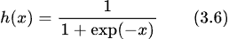
式（3.6）中的 exp(-x) 表示 的意思。e 是纳皮尔常数 2.7182 …。
sigmoid 函数的实现:
def sigmoid(x):
return 1 / (1 + np.exp(-x))sigmoid 函数和阶跃函数的比较
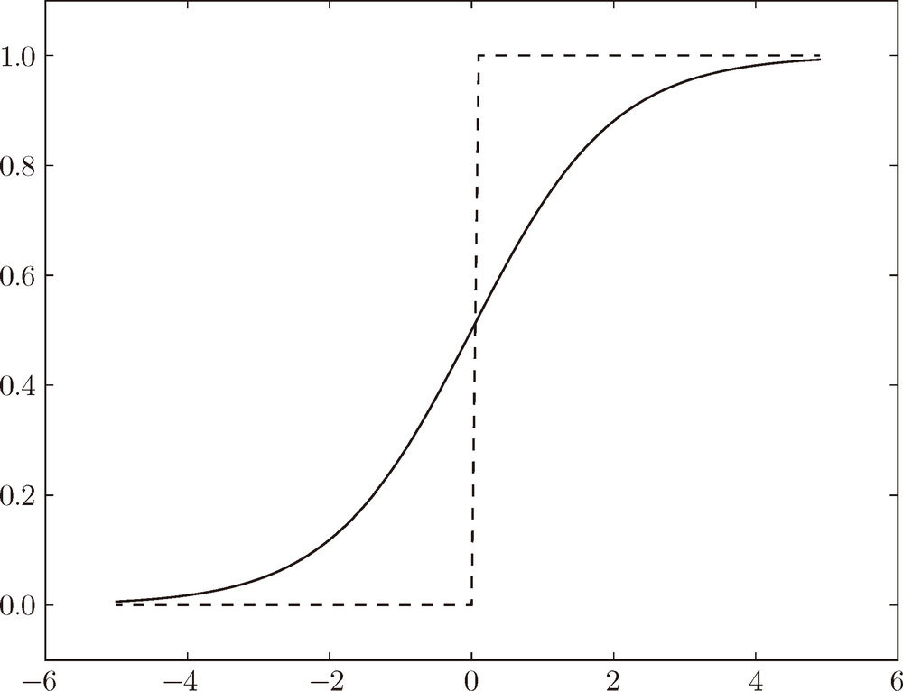
观察图 3-8，首先注意到的是“平滑性”的不同。sigmoid 函数是一条平滑的曲线，输出随着输入发生连续性的变化。而阶跃函数以 0 为界，输出发生急剧性的变化。sigmoid 函数的平滑性对神经网络的学习具有重要意义。另一个不同点是，相对于阶跃函数只能返回 0 或 1，sigmoid 函数可以返回 0.731 …、0.880 … 等实数（这一点和刚才的平滑性有关）。也就是说，感知机中神经元之间流动的是 0 或 1 的二元信号，而神经网络中流动的是连续的实数值信号。
神经网络的激活函数必须使用非线性函数。因为使用线性函数的话，加深神经网络的层数就没有意义了。线性函数的问题在于，不管如何加深层数，总是存在与之等效的“无隐藏层的神经网络”。使用线性函数时，无法发挥多层网络带来的优势。因此，为了发挥叠加层所带来的优势，激活函数必须使用非线性函数。
ReLU（Rectified Linear Unit）函数,在输入大于 0 时，直接输出该值；在输入小于等于 0 时，输出 0（图 3-9）。
image:images/0616099334545872644824494563469207905530.jpg[title='图 3-9']
ReLU 函数可以表示为下面的式 (3.7)。
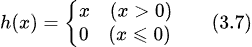
因此，ReLU 函数的实现也很简单，可以写成如下形式。
def relu(x):
return np.maximum(0, x)2.8. 多维数组的运算
用NumPy生成多维数组
>>> import numpy as np
>>> A = np.array([1, 2, 3, 4])
>>> print(A)
[1 2 3 4]
>>> np.ndim(A) # 数组的维数可以通过 np.ndim() 函数获得
1
>>> A.shape # ，数组的形状可以通过实例变量 shape 获得
(4,)
>>> A.shape[0]
4
>>> B = np.array([[1,2], [3,4], [5,6]])
>>> print(B)
[[1 2] [3 4] [5 6]]
>>> np.ndim(B)
2
>>> B.shape
(3, 2)这里生成了一个 3 × 2 的数组 B。3 × 2 的数组表示第一个维度有 3 个元素，第二个维度有 2 个元素。另外，第一个维度对应第 0 维，第二个维度对应第 1 维（Python 的索引从 0 开始）。二维数组也称为矩阵（matrix）。如图 3-10 所示，数组的横向排列称为行（row），纵向排列称为列 （column）。
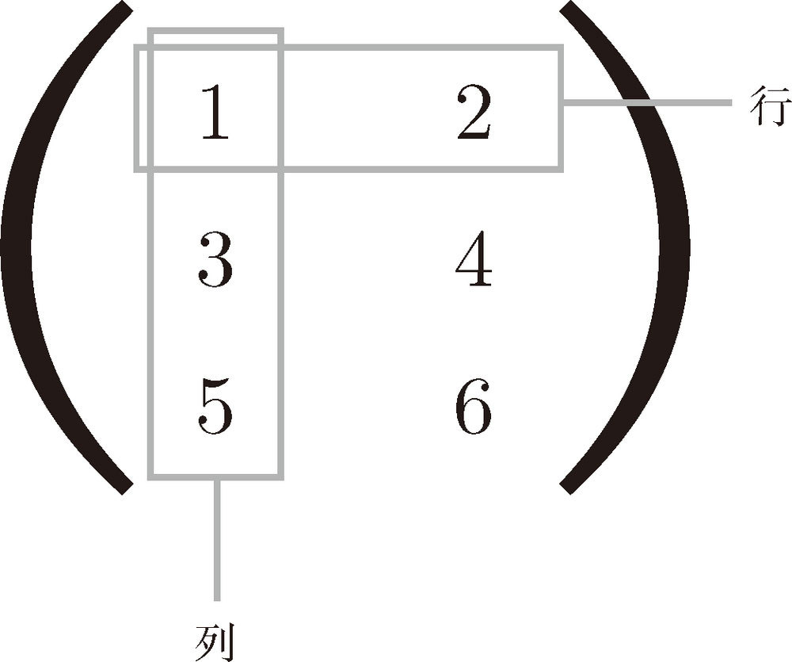
绍矩阵（二维数组）的乘积。比如 2 × 2 的矩阵，其乘积可以像图 3-11 这样进行计算（按图中顺序进行计算是规定好了的）。
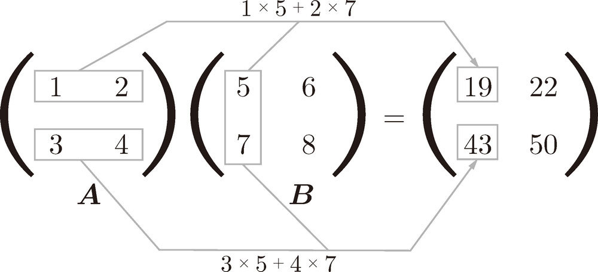
>>> A = np.array([[1,2], [3,4]])
>>> A.shape
(2, 2)
>>> B = np.array([[5,6], [7,8]])
>>> B.shape
(2, 2)
>>> np.dot(A, B)
array([[19, 22],
[43, 50]])神经网络的内积
以图 3-14 中的简单神经网络为对象。这个神经网络省略了偏置和激活函数，只有权重。
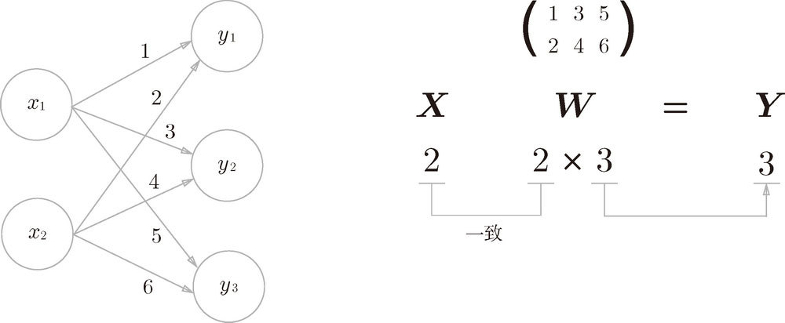
>>> X = np.array([1, 2])
>>> X.shape
(2,)
>>> W = np.array([[1, 3, 5], [2, 4, 6]])
>>> print(W)
[[1 3 5] [2 4 6]]
>>> W.shape
(2, 3)
>>> Y = np.dot(X, W)
>>> print(Y)
[ 5 11 17]如图 3-16 所示，权重和隐藏层的神经元的右上角有一个“(1)”，它表示权重和神经元的层号（即第 1 层的权重、第 1 层的神经元）。此外，权重的右下角有两个数字，它们是后一层的神经元和前一层的神经元的索引号。比如，w12 表示前一层的第 2 个神经元 x2 到后一层的第 1 个神经元 a1 的权重。权重右下角按照“后一层的索引号、前一层的索引号”的顺序排列。
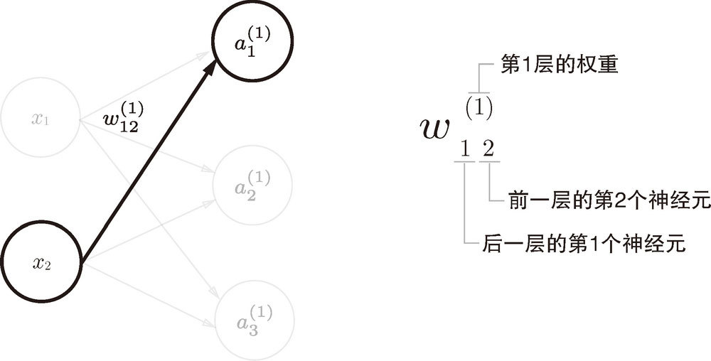
从输入层到第 1 层的第 1 个神经元的信号传递过程，如图 3-17 所示。
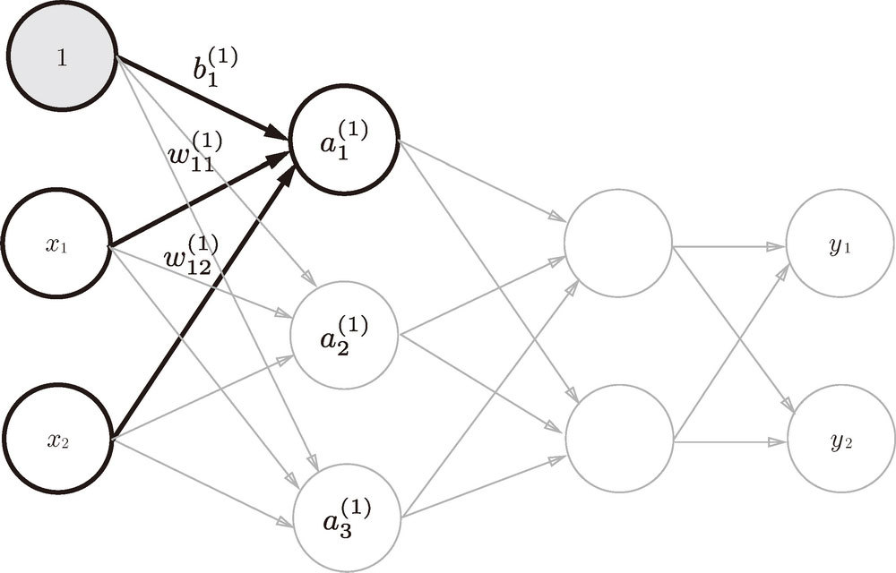
图 3-17 中增加了表示偏置的神经元“1”。为了确认前面的内容，现在用数学式表示
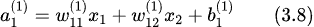
如果使用矩阵的乘法运算，则可以将第 1 层的加权和表示成下面的式（3.9）。
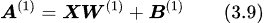
其中
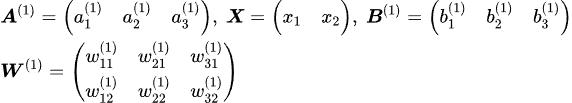
下面我们用 NumPy 多维数组来实现式（3.9），这里将输入信号、权重、偏置设置成任意值。
X = np.array([1.0, 0.5])
W1 = np.array([[0.1, 0.3, 0.5], [0.2, 0.4, 0.6]])
B1 = np.array([0.1, 0.2, 0.3])
print(W1.shape) # (2, 3)
print(X.shape) # (2,)
print(B1.shape) # (3,)
A1 = np.dot(X, W1) + B1观察第 1 层中激活函数的计算过程。如果把这个计算过程用图来表示的话，则如图 3-18 所示。
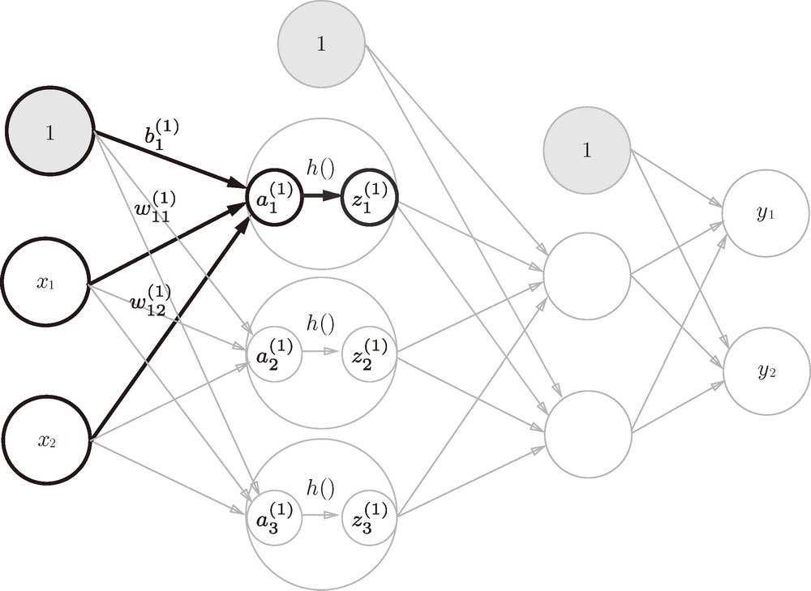
如图 3-18 所示，隐藏层的加权和（加权信号和偏置的总和）用 a 表示，被激活函数转换后的信号用 z 表示。此外，图中 h() 表示激活函数，这里我们使用的是 sigmoid 函数。用 Python 来实现，代码如下所示。
Z1 = sigmoid(A1)
print(A1) # [0.3, 0.7, 1.1]
print(Z1) # [0.57444252, 0.66818777, 0.75026011]下面，我们来实现第 1 层到第 2 层的信号传递（图 3-19）。
W2 = np.array([[0.1, 0.4], [0.2, 0.5], [0.3, 0.6]])
B2 = np.array([0.1, 0.2])
print(Z1.shape) # (3,)
print(W2.shape) # (3, 2)
print(B2.shape) # (2,)
A2 = np.dot(Z1, W2) + B2
Z2 = sigmoid(A2)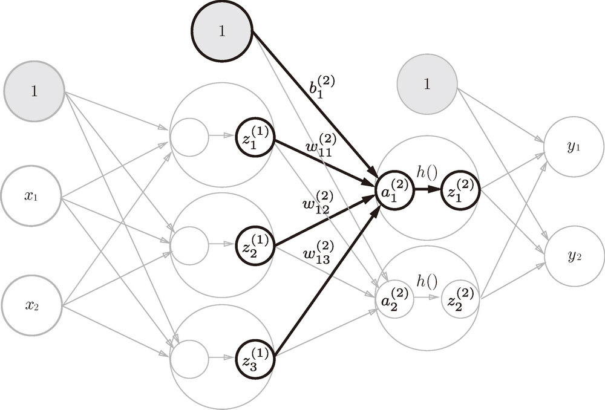
最后是第 2 层到输出层的信号传递（图 3-20）。输出层的实现也和之前的实现基本相同。不过，最后的激活函数和之前的隐藏层有所不同。
def identity_function(x):
return x
W3 = np.array([[0.1, 0.3], [0.2, 0.4]])
B3 = np.array([0.1, 0.2])
A3 = np.dot(Z2, W3) + B3
Y = identity_function(A3) # 或者Y = A3这里我们定义了 identity_function() 函数（也称为“恒等函数”），并将其作为输出层的激活函数。图 3-20 中，输出层的激活函数用 σ() 表示，不同于隐藏层的激活函数 h()。
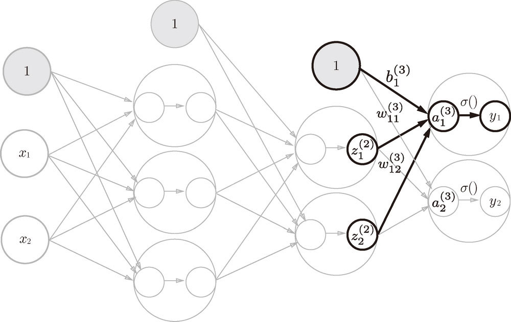
| 输出层所用的激活函数，要根据求解问题的性质决定。一般地，回归问题可以使用恒等函数，二元分类问题可以使用 sigmoid 函数，多元分类问题可以使用 softmax 函数。 |
整理代码，按照神经网络的实现惯例，只把权重记为大写字母 W1，其他的（偏置或中间结果等）都用小写字母表示。
def init_network():
network = {}
network['W1'] = np.array([[0.1, 0.3, 0.5], [0.2, 0.4, 0.6]])
network['b1'] = np.array([0.1, 0.2, 0.3])
network['W2'] = np.array([[0.1, 0.4], [0.2, 0.5], [0.3, 0.6]])
network['b2'] = np.array([0.1, 0.2])
network['W3'] = np.array([[0.1, 0.3], [0.2, 0.4]])
network['b3'] = np.array([0.1, 0.2])
return network
def forward(network, x):
W1, W2, W3 = network['W1'], network['W2'], network['W3']
b1, b2, b3 = network['b1'], network['b2'], network['b3']
a1 = np.dot(x, W1) + b1
z1 = sigmoid(a1)
a2 = np.dot(z1, W2) + b2
z2 = sigmoid(a2)
a3 = np.dot(z2, W3) + b3
y = identity_function(a3)
return y
network = init_network()x = np.array([1.0, 0.5])
y = forward(network, x)
print(y) # [ 0.31682708 0.69627909]